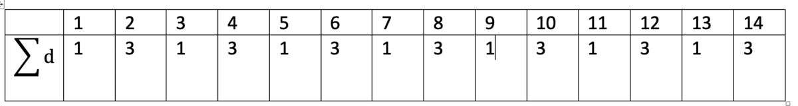

A perfect number is a number for which the sum of its proper divisors is exactly equal to the number. For example, the sum of the proper divisors of 28 would be 1 + 2 + 4 + 7 + 14 = 28, which means that 28 is a perfect number.
A number n is called deficient if the sum of its proper divisors is less than n and it is called abundant if this sum exceeds n.
As 12 is the smallest abundant number, 1 + 2 + 3 + 4 + 6 = 16, the smallest number that can be written as the sum of two abundant numbers is 24. By mathematical analysis, it can be shown that all integers greater than 28123 can be written as the sum of two abundant numbers. However, this upper limit cannot be reduced any further by analysis even though it is known that the greatest number that cannot be expressed as the sum of two abundant numbers is less than this limit.
Find the sum of all the positive integers which cannot be written as the sum of two abundant numbers.
I never really got around this problem. Solved this fairly recently. So, we have three steps
We can do this again for the next integer: 3

Answer: 4179871
Runtime: 8.8 seconds